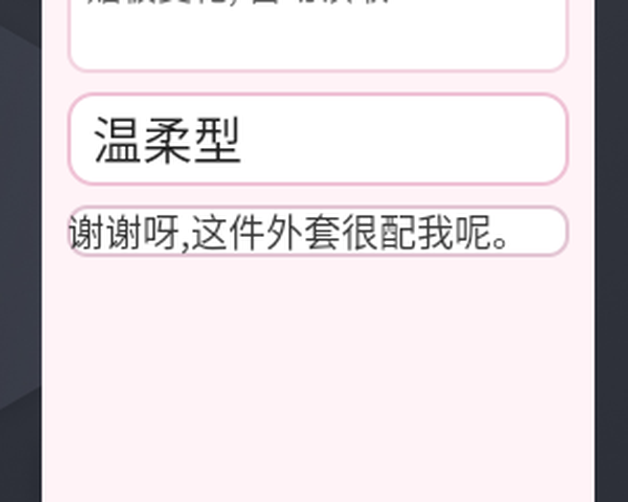
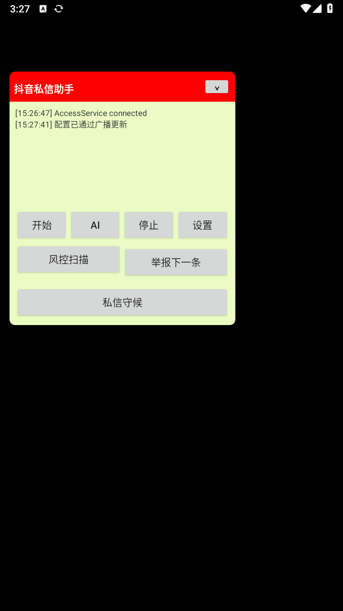
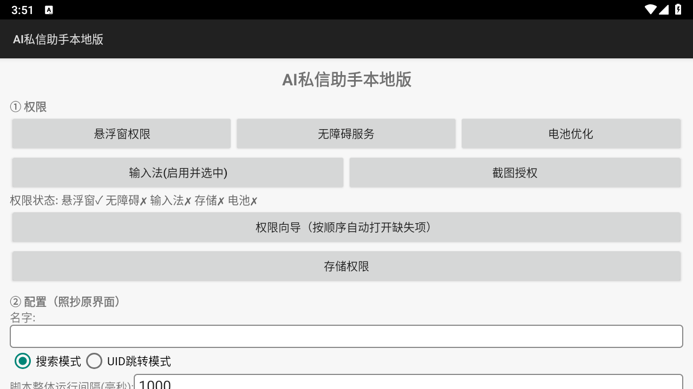

> 项目：com.sixzs.local（AI 私信助手） /com.sixzs.lovekb（恋爱键盘）> 版本：v1.0 · 2026-11-13
> 作者：WorkBuddy / Space-Bunny
> 读者：接手本项目的工程师 —— 读完能说清架构、知道每个决策的理由、遇到同类问题会查
00 · 摘要
两个 App 是什么
AI 私信助手 恋爱键盘 包名 com.sixzs.localcom.sixzs.lovekb定位 自媒体/评论区的运营自动化 聊天场景的话术辅助 输入 关键词 / 任务描述 对方发来的消息 输出 导航动作、评论分类、举报、意向名单 分类 + 候选话术 + 直接填入聊天框 模型 智谱 GLM（看屏决策） 智谱 GLM（分类生成） 依赖 Lua 引擎 + ncnn/PaddleOCR（native） 纯 Java，零 native 代码量 17 类 / 3994 行 16 类 / 4112 行 APK 14.4 MB（双架构通用包） 75 KB 两者规模几乎一致，但依赖天差地别：私信助手需要 native 库才能跑 Lua 脚本和 OCR；
恋爱键盘刻意做成纯 Java，让 75 KB 的包在任何架构的真机上都能装。
本轮改进的 8 条关键结论
# 结论 代价 / 前提 1 视觉模型从 glm-4.5v换成glm-4.6v单次分析 40–57 s → 5.8–8.4 s，输入价 2→1 元/百万 2 拆成两阶段：视觉只"读"，文本只"写" 多一次 HTTP 往返，但思考 token 不再吃光 max_tokens 3 截图先预处理：裁剪 → 长边 1280 → JPEG base64 161 KB → 51 KB，识别精度不降 4 Android 14+ 的无障碍截图必须声明 canTakeScreenshot漏了直接报 Services don't have the capability...5 MediaProjection 的授权票是一次性的，必须在前台服务里换 漏 foregroundServiceType="mediaProjection"会抛 SecurityException6 节点树与截图是互补双通道，不是二选一 节点树快但读不到自绘界面；截图慢但什么都能读 7 选中 ≠ 发送：话术必须可改、可撤 人在回路，AI 只负责出草稿 8 所有能力都走广播入口，网页控制台只是这些广播的 UI 脚本、网页、自动化测试共用一条路径 性能总表（均为真机/模拟器实测）
指标 改进前 改进后 变化 截图分析端到端耗时 40–57 s 10–17 s ↓ 70% 视觉模型输入 token 1219 1027 ↓ 16%（裁剪生效） 图像 base64 体积 161 KB 51 KB ↓ 68% 内存占用（分析后） 2571 KB 1757 KB ↓ 32% 面板布局组件可见性 部分被挤出 全部可见 — 01 · 架构全景
1.1 共通四层内核
两个 App 不是"两个产品"，而是同一个内核的两种封装。所有改进都落在某一层上：
┌─────────────────────────────────────────────────────────┐│ ④ 交互层 悬浮窗面板 / 输入法面板 / 系统通知 / 网页控制台 ││ —— 人与 AI 的交接面（看得见、可改、可撤） │├─────────────────────────────────────────────────────────┤│ ③ 决策层 智谱 GLM │ 两阶段流水线 / 提示词分层 / 容错解析 ││ —— 把"看见的"变成"该做的" │├─────────────────────────────────────────────────────────┤│ ② 感知层 无障碍节点树 │ 无障碍截图 │ MediaProjection ││ —— 拿到"当前是什么界面、对方说了什么" │├─────────────────────────────────────────────────────────┤│ ① 执行层 无障碍手势 / IME 写入 / 节点操作 / 点击发送 ││ —— 把"该做的"落到真实像素上 │└─────────────────────────────────────────────────────────┘ ▲ 广播驱动层（SET_CONFIG / 各类 ACTION） └── 网页控制台 / adb 脚本 / 自动化测试共用1.2 两个 App 的类职责
私信助手（
src/com/sixzs/local/，17 类）
类 行数 职责 MainActivity639 设置页、权限体检、配置持久化 Host530 Lua 脚本宿主（JSB 桥） GlmAgent493 看屏决策：截图 → 视觉模型 → 解析动作 → 执行 FloatService442 悬浮窗面板、Lua 热重启、风控扫描、举报 CommentGuard429 评论区采集 + AI 风控分类（风险/意向） DmAutoReply272 私信守候：轮询 + 自动回复 + 频控 NodeUtil213 节点树索引化（给模型稳定 id） LuaHost166 Lua 引擎加载、异常兜底 GuardReceiver141 广播入口（9 个 action） 其余 8 类 748 AccessService / ScreenCap / LocalImeService / UiElements … 恋爱键盘（
src/com/sixzs/lovekb/，16 类）
类 行数 职责 FloatService1126 悬浮窗面板、候选渲染、编辑框、撤回、内存清理 AccessService428 节点树读取、上下文提取、填入/清空输入框、点发送 MainActivity347 设置页（模型/图像参数/类型/权限） CaptureService316 mediaProjection 前台服务：承载投影会话 LoveAI314 两阶段流水线、提示词分层、容错解析 LoveReceiver296 广播入口（20 个 action） LoveImeService258 输入法形态：读剪贴板、写文本、发消息 ScreenCap/ImgPrep/Cleaner494 截图门面 / 图像预处理 / 内存清理 1.3 分工
私信助手是"多场景运营"：搜索 → 导航 → 进评论区 → 分类 → 举报，需要 AI 做看屏决策（看到什么点哪里）。
恋爱键盘是"单场景对话"：看清对方说了什么 → 生成话术 → 填进输入框，需要 AI 做语义生成。
这个差异决定了二者对模型的要求不同：前者要视觉 + 空间推理，后者要文本质量 + 分寸感。
02 · 感知层改进
2.1 双通道：节点树 与 截图
核心认知：这两条路不是"新功能替代旧功能"，而是互补。
无障碍节点树 截图 + 视觉模型 速度 毫秒级 5–15 秒 成本 0 每次调 API 精度 结构化、准确 依赖模型 OCR 覆盖面 对方 App 暴露节点才能读 什么界面都能读 实测 抖音评论区读到 12 条 抖音 feed 页节点树返回 0 条
AccessService.chatContext()的策略是：优先节点树，失败回退截图。抖音的自绘界面是典型反例 —— 我们的无障碍服务能读到文本，但
uiautomator dump什么都看不到，说明它走的是自绘渲染而非标准 View 体系。
// 节点树读不到时的兜底（实测抖音评论区返回 0 条）List<String> ctx = AccessService.chatContext(12);if (ctx == null || ctx.isEmpty()) { // → 走截图分析}2.2 上下文提取算法
> 上下文提取的现场：抖音评论区自绘界面，节点树能读到气泡文本但读不到完整结构，
> 截图 + 视觉模型可以兜底。
节点树里全是噪声：顶部导航、底部 Tab、标题栏、输入框。直接全量喂给模型会让它
把"大家都在搜"当成对方说的话。
三步过滤（
AccessService.chatContext）：① 定位聊天容器: 可滚动 + 文本多 + 不在顶/底导航带 → 打分选最优② 剔除导航带: 顶 10% / 底 10% 的文本直接丢③ 排序与截断: 按屏幕 Y 坐标升序, 取最近 N 条容器打分函数（关键参数）：
条件 分值 理由 容器内 TextView 数量 +n聊天区文本最多 isScrollable()+5聊天列表必然可滚 高度 < 25% 屏高 −4那是导航条不是聊天 贴顶（top<8% 且 bottom<20%） −6同上 贴底（bottom>93%） −6同上 2.3 无障碍截图：声明决定权限
Android 11+ 的
AccessibilityService.takeScreenshot()不需要系统授权弹窗，但前提是无障碍服务声明里写了这个属性：
<!-- res/xml/access_service.xml --><accessibility-service android:canRetrieveWindowContent="true" android:canPerformGestures="true" android:canTakeScreenshot="true" /> <!-- ← 漏这行直接被系统拒绝 -->漏掉时的报错极其直白：
截图方式: 无障碍截图(免授权)结果: 截图失败: 调用异常: Services don't have the capability of taking the screenshot.> 这类"声明型权限"不会出现在任何权限申请流程里 —— 它只写在 manifest 的 meta-data 里。
> 排查截图失败时，第一件事是
aapt2 dump xmltree核对编译产物里有没有这一行：> ```bash
> aapt2.exe dump xmltree app.apk --file res/xml/access_service.xml | grep canTakeScreenshot
> ```
2.4 MediaProjection：一次性票与前台服务名分
低版本（Android 10 及以下）只能走 MediaProjection。它的正确用法有一条硬性顺序：
Activity 收到授权结果 (resultCode = -1 即 RESULT_OK) │ ① 把票放进同进程静态槽位 ▼CaptureService (foregroundServiceType="mediaProjection") │ ② startForeground(id, notification, FOREGROUND_SERVICE_TYPE_MEDIA_PROJECTION) │ ③ getMediaProjection(resultCode, resultData) ← 用掉那张一次性票 │ ④ registerCallback(onStop → 释放) │ ⑤ createVirtualDisplay(...) ← 必须在服务上下文里 ▼投影会话常驻(START_STICKY) → 随时 grab() 取一帧为什么"名分"这么重要：Android 14 起，
createVirtualDisplay()只允许在已声明
mediaProjection类型的前台服务里调用，否则系统直接抛：SecurityException: Must start a foreground service of type mediaProjection before creating a VirtualDisplay原实现是在 Activity 里直接建虚拟屏 —— 在 Android 15 上必然失败。
关于"一次性票"：
resultCode + resultData是一次性授权凭据。Android 对跨进程传递嵌套 Intent 有保护，
putExtra(String, Intent)经startForegroundService后可能拿不到。所以同进程用静态字段传递最可靠（Activity 与 Service 在同一进程）。
踩坑：
RESULT_OK == -1// ❌ 错误：把合法的 RESULT_OK 当成失败if (rc < 0) { /* 无效 */ }// ✅ 正确boolean ok = (rc == android.app.Activity.RESULT_OK) && data != null;
Activity.RESULT_OK的值是 -1（不是 0）。这个 bug 一度让"投影会话已建立"的日志永远不出现，而表面看像是"票传丢了"。排查时先打印
resultCode实际值。2.5 图像预处理管线
原始截图直接 base64 上传是浪费。真机 1080×2400 的实测：
阶段 JPEG base64 说明 原图 q70 120 KB 161 KB 不处理 长边压到 1280 59 KB 79 KB Bitmap.createScaledBitmap长边 1280 + 裁剪聊天区 38 KB 51 KB 再去掉无关像素
ImgPrep.prepare()三步：裁剪 → 缩放 → 压缩，并记录压缩前后体积供 UI 展示。裁剪依据来自 2.2 的容器坐标 —— 既然已经知道聊天区在哪，就没必要把整屏发给模型。
副作用是好的：无关像素被去掉后，模型判定的类型明显更准（实测从"共情型"变"搭讪型"，
因为它终于看见了真正的评论而不是搜索提示栏）。
2.6 裁剪会裁歪 → 自动回退
裁剪依赖无障碍给的容器坐标，但对方 App 自绘时坐标可能不准（抖音评论区就裁到了搜索栏）。
加一层校验：
LoveAI.looksLikeUiNoise(text) → 命中"大家都在搜 / 综合 / 推荐 / 直播…"等界面词 → 判定为裁歪 → 自动用整屏重试一次03 · 决策层改进
3.1 从"一个大模型干所有事"到两阶段
原设计：截图 + 完整上下文 → 一个视觉模型 → 同时完成"读懂对方说了什么 + 判类型 + 写 3 条回复"。
问题：
glm-4.5v是思考型模型，token 花在reasoning_content上，
max_tokens=800直接被思考吃光 →finish_reason: length→ 正文 content 为空。虽然补了"续写一轮"逻辑，但每轮都要重新上传整张图。
现在：
阶段① 视觉模型: 只负责"读出对方说了什么" 输出 {"latest":"对方最新消息原文","topic":"聊天话题","visual":"画面补充"} max_tokens 只需够读完，输出极短 ↓阶段② 纯文本模型(glm-4-flash): 基于读出的文本 + 上下文 输出 [{"type":"类型","intent":"意图","replies":["回复1","回复2","回复3"]}]收益：
- 视觉阶段不用思考 → 不会 token 吃光 → 不需要续写 → 不重复上传图片
- 文本阶段用便宜的 flash → 2–3 秒出结果
- 阶段① 的输出（
latest）可以直接展示给用户 —— 模型到底读懂了没有，一目了然- 阶段① 失败 → 自动降级为纯文本生成（用节点树上下文），不会卡住
3.2 思考型模型的 token 陷阱
症状 根因 修法 content为空但reasoning_content有内容思考吃光 max_tokens 提到 3000 + 续写"直接只输出 JSON" 同上，且 finish_reason: length同上 同上 阶段① 耗时 18 s（预期 6 s） max_tokens 给 600 太小，触发续写 提到 1500 → 回到 10 s 续写策略（
Glm.chat）：for (int round = 0; round < 2; round++) { String content = msgObj.optString("content", ""); if (content != null && content.trim().length() > 0) return content; // 正文为空 → 把 reasoning 带上，问"不要再分析，直接只输出 JSON" messages.put(msg("assistant", reasoning)); messages.put(msg("user", "不要再分析, 现在直接只输出最终的 JSON 数组结果。"));}3.3 模型选型（实测基准）
同一张真实截图、同一段提示词、同一台机器：
模型 耗时 输入价 输出价 结论 glm-4.5v40–57 s 2 元/百万 6 元/百万 太慢且贵 glm-4.6v5.8–8.4 s 1 元/百万 3 元/百万 主力 GLM-4.6V-Flash9–12 s 免费 免费 偶发 429，可作备份 GLM-4V-Flash— — — HTTP 400，不可用 基准脚本留在
LoveKeyboard/tools/bench_vision.py，可随时复跑：python tools/bench_vision.py glm-4.6v glm-4.5v GLM-4.6V-Flash> 选型原则：视觉任务先测再选，不要凭印象。思考型模型做"简单读图"是浪费 ——
> 它花了 2000 token 思考"对方在说什么"，而答案只有 20 字。
3.4 提示词分层与容错解析
分层：
READ_SYSTEM（只读图）/WRITE_SYSTEM（只写回复）分离，避免一个提示词里既要求观察又要求创作 —— 模型容易顾此失彼。
容错解析（
LoveAI.parse）的防线，从上到下：① 剥离 markdown 代码块包裹 (```json ... ```)② 全角标点归一化: ：→ : ，→ , “”→ " ｛｝→ {} ［］→ []③ 提取 [ ... ] 区间④ JSONArray 解析⑤ 失败 → 正则兜底: 逐个 \{[^}]*\} 块抽 type/intent/replies⑥ 解析失败 → 打印原始输出前 300 字符(排查用)> 全角冒号是高频坑：模型输出
{"type"："幽默型"}时，标准 JSON 解析直接抛异常。> 归一化必须在解析之前做。
3.5 类型可约束
恋爱键盘允许通过下拉框把类型限定为单一类型（幽默型/搭讪型/温柔型…）：
String types = cfg.types; // 全类型表if (cfg.currentType != null && !cfg.currentType.trim().isEmpty()) { types = cfg.currentType.trim(); // 限定单一类型}实测：限定「搭讪型」后，模型判的类型和回复风格都变成搭讪型
（"我也喜欢这件外套啊，我最近迷上了这种风格"），而不是只在 UI 上换个标签。
04 · 执行层改进
4.1 填入与发送的多通道策略
同一个目标（把话塞进对方输入框并发出）有两条通道，按场景自动选：
① IME 通道（本 App 正是当前输入法时） commitText(text) → performEditorAction(IME_ACTION_SEND) ✅ 不受键盘遮挡影响，最可靠② 无障碍通道 findChatInput() → ACTION_SET_TEXT → findSendButton() → ACTION_CLICK ⚠️ 键盘弹起时会挡住发送按钮 → 最多重试 3 次(450/700/700ms)私信助手也做了同样的双通道（
DmAutoReply），并额外加了三重保护：同一句只回一次、每小时限额、只在聊天语义的输入框里触发。
> 反测试很重要：微信/QQ 的评论区也有输入框和发送键。
> 如果只看"能发出去"，很容易在评论区误发。必须专门验证不该触发时确实没触发。
4.2 选中 ≠ 发送：人在回路
这是本轮最重要的交互修正。
原行为：点候选 → 立即复制 + 填入 + 发送。发错了无法挽回，话术不合适也改不了。
现在：
① 选中候选(点一下) → 高亮 + 文本进编辑框 + 复制备用 + 按开关决定是否立即发 长按候选 → 只进编辑框, 不发送(给"先改再发"的机会)② 在编辑框里人工修改③ 点「填入发送」 → 发送编辑框里(改过的)内容④ 点「撤回」 → 取消高亮 + 清编辑框 + 清掉对方输入框里已填入的文本 + 清剪贴板撤回的实现（
AccessService.clearChatInput）：android.os.Bundle args = new android.os.Bundle();args.putCharSequence(AccessibilityNodeInfo.ACTION_ARGUMENT_SET_TEXT_CHARSEQUENCE, "");input.performAction(AccessibilityNodeInfo.ACTION_SET_TEXT, args);
撤回时机 效果 填了还没点发送 ✅ 输入框内容真的被清空 已经点发送了 ⚠️ 对方已收到，撤不回（需在对方 App 长按撤回） 面板会明确区分这两种情况，不含糊地说"已撤回"。
4.3 脚本路径也走同一套
自动化的最大风险是"脚本不知道人改了什么"。所以广播接口也拆成三步：
R=com.sixzs.lovekb/.LoveReceiveradb shell am broadcast -n $R -a com.sixzs.lovekb.PICK --ei index 1 # 选中adb shell am broadcast -n $R -a com.sixzs.lovekb.SET_DRAFT --es text "..." # 改adb shell am broadcast -n $R -a com.sixzs.lovekb.SEND_DRAFT # 发adb shell am broadcast -n $R -a com.sixzs.lovekb.UNDO # 撤> 行为变更提醒：
PICK从"选中并立即发送"改成只选中（这样才能先改再发）。> 要连发用
pickAndSend()。05 · 交互层改进
5.0 悬浮窗面板演进
v1 状态区 + 3 主操作 + 4 次操作v4 加类型徽章 / 候选序号 / L 形缩放手柄 / 折叠展开v6 候选区套 ScrollView（窗口变小也能滚）v8 加内存实时显示 / 清上下文 / 清理内存v9 加话术编辑框 / 撤回最终结构（真实截图见下）：
┌──────────────────────────────────────────┐│ 恋爱键盘 [温柔型] [▼] [✕] │ ← 标题栏(可拖动)├──────────────────────────────────────────┤│ 【温柔型】赞美对方眼光 │ ← 状态区│ [温柔型 ▾] │ ← 类型下拉框│ [谢谢呀,这件外套很配我呢。] │ ← 话术编辑框(可改)│ ┌──────────────────────────────────────┐ ││ │ 1. 谢谢夸奖,这件外套真的很搭。 │ │ ← 候选区(可滚动)│ │ 2. 哈哈,你也觉得好看呀,谢谢你的眼光。│ ││ └──────────────────────────────────────┘ ││ [读剪贴板][生成回复][填入发送] │ ← 主操作│ [读上下文][截图分析][清上下文] │ ← 次操作1│ [设置][撤回][清理] 内存 1757KB │ ← 次操作2 + 内存│ 拖右下角可缩放 [复位] ◣ │ ← 尺寸 + 把手└──────────────────────────────────────────┘
> 恋爱键盘悬浮窗实测截图：类型下拉框、话术编辑框、三条带序号的候选、撤回按钮、
> 右下角实时内存占用。
5.1 三种伸缩方式
方式 实现 拖右下角手柄 L 形角标 34dp 触摸区，实时改宽高；松手存 SharedPreferences，下次启动恢复 折叠 / 展开 标题栏 ▼ 收起成一条粉色标题栏（徽章还在）；生成出新回复时自动展开 复位 一键回默认 340×520dp 5.2 布局陷阱：wrap_content 父容器里的 weight 不可靠
这个坑本轮踩了两次，值得单独写：
现象 根因 修法 徽章把 × 关闭按钮挤出面板外 0dp + weight=1的徽章在 wrap_content 父容器里吃掉整屏宽度徽章按内容宽度(≤150dp) + 弹性 View 撑开 + 按钮固定宽；窗口宽度始终显式指定 加了 EditText 后候选区整个消失 候选区 ScrollView 是 wrap_content+weight=1，父容器 wrap_content 时剩余空间 = 0改用固定高度 110dp 规律：
LinearLayout的layout_height="wrap_content"时，子项的layout_weight不按"剩余空间"分配，而是先按 wrap_content 测量再按权重分配剩余 —— 剩余可能是 0 或负。
固定高度就用 dp，不要用 weight。
5.3 内存生命周期
恋爱键盘会攒下四样占内存的东西：
东西 体积 谁负责释放 截图 Bitmap 1080×2400 ARGB ≈ 10 MB analyzeByShot用完立即recycle()候选卡片 TextView 每次生成新建 Cleaner.clearCards()摘除 + 断引用上下文 / 对方消息 小 LoveEngine.clearAll()录屏会话 VirtualDisplay + ImageReader 「清理」按钮停掉 CaptureService 两个按钮的分工：
- 清上下文 —— 只清会话状态，不动录屏会话（换人聊天时用）
- 清理 —— 四样全清 + 主动
System.gc()右下角实时显示内存占用（每 5 秒刷新），清理效果肉眼可见：实测 2571 KB → 1757 KB。
06 · 工程面
6.1 广播驱动：一切能力的统一入口
两个 App 的所有外部可调用能力都收敛到一个 BroadcastReceiver：
App Receiver Action 数 私信助手 GuardReceiver9 恋爱键盘 LoveReceiver20 # --- 私信助手 ---R=com.sixzs.local/.GuardReceiveradb shell am broadcast -n $R -a com.sixzs.local.START_AIadb shell am broadcast -n $R -a com.sixzs.local.SCAN_GUARDadb shell am broadcast -n $R -a com.sixzs.local.REPORT_NEXTadb shell am broadcast -n $R -a com.sixzs.local.DM_GUARD_ON# --- 恋爱键盘 ---R=com.sixzs.lovekb/.LoveReceiveradb shell am broadcast -n $R -a com.sixzs.lovekb.START_PANELadb shell am broadcast -n $R -a com.sixzs.lovekb.PICK --ei index 1adb shell am broadcast -n $R -a com.sixzs.lovekb.SEND_DRAFTadb shell am broadcast -n $R -a com.sixzs.lovekb.UNDO为什么重要：
- 网页控制台、adb 脚本、自动化测试共用同一条路径 —— 不存在"网页能用脚本不能用"的分裂
- 能力可被外部脚本编排（比如"扫描 → 挑一条 → 改 → 发"）
- 自动化测试不需要 UI 交互（模拟器上 overlay 收不到 adb 注入触摸）
> 踩过的坑：Manifest 的
<receiver>里如果只声明了一个 action，> 其他 action 的广播"发送成功但毫无反应" —— 系统根本没投递。
> 每次新增 action 必须同步在
<intent-filter>里声明。6.2 网页联调控制台

> 私信助手悬浮窗面板：开始/AI/停止/设置/风控扫描/私信守候 —— 全部动作在网页控制台
> 上有一一对应的按钮，背后是同一套广播。
App/tools/dashboard.py（纯标准库，无第三方依赖）：① AI 智能控制 任务/关键词/模型/步数/Key → 启动 AI / 停止 AI / 保存配置到手机② 评论区风控 自动下滑开关 + 风险QQ → 扫描评论 / 扫描+AI识别 / 举报下一条③ 私信守候 自动回复开关 + 自己写死的回复内容 → 开启 / 停止守候④ 权限体检 悬浮窗/无障碍/截图授权/录屏服务 四项实时刷新 + 一键补授⑤ AI 看到的画面 拉取手机上的 ai_last.jpg，核对模型到底看见了什么⑥ 恋爱键盘 装它 / 下发 Key / 起面板 / 读剪贴板 / 生成 / 选第N条 / 改话术 / 发 / 撤 / 清理技术要点：
- 多设备自动选择（优先
emulator-*）—— 之前没做，两台设备在线时全部动作失效- 日志用关键词过滤而非
logcat -s（多设备环境下-s不稳）- 配置存
tools/.dash_cfg.json，下次打开自动回填- 空 Key 不下发（两边都做了保护：网页不下发 + App 收到空值不覆盖）
6.3 构建矩阵与 ABI
私信助手带 native 库，架构问题很致命：
sh build_windows.sh 32 # armeabi-v7a, 含 PaddleOCR 插件与模型 (14MB)sh build_windows.sh 64 # arm64-v8a, 只有宿主(206KB, OCR 降级)sh build_windows.sh both # 双架构通用包 (14.4MB) ← 推荐
liblua_host.so没有 x86 版。在 x86_64 模拟器上：
包 结果 32 位 dlopen failed→UnsatisfiedLinkError→ 点「开始」把 App 点崩arm64 原生库可加载，脚本能跑 双架构通用 都能装 修法：
LuaHost.nativeReady标志 + 捕获异常，装不上就提示一句，不再崩。> OCR 只有 armeabi-v7a 一份（ncnn/PaddleOCR 没编 arm64 版）。
> arm64 真机上原版 Lua 脚本靠"图片找图标"的步骤会失效，表现为脚本反复「返回/1」空转。
> AI 模式完全不受影响（纯 Java）。
6.4 可观测性：日志分层
Logx.i("..."); // 进 logcat + 悬浮窗状态区（用户可见）Logx.quiet("..."); // 只进 logcat（技术性日志，不刷状态区）技术日志（类型切换、内存回收、耗时统计）全改
quiet之后，状态区不再被挤掉，用户看到的只有对自己有用的信息。
07 · 问题现场
> 本节是全文最有价值的部分。每一条都是真实踩过的坑，附原始报错与修法。
07.1 平台限制类

> 权限未开启时的实测现场：悬浮窗/无障碍/存储三项全 ✗。
> 网页控制台的「权限体检」就是为这种场景做的 —— 一次看清缺哪一项。
# 现象 根因 修法 1 Services don't have the capability of taking the screenshot.access_service.xml漏canTakeScreenshot="true"补声明；用 aapt2 dump xmltree核对编译产物2 SecurityException: Must start a foreground service of type mediaProjection before creating a VirtualDisplay在 Activity 里调 createVirtualDisplay搬到 CaptureService（type=mediaProjection）3 Context.startForegroundService() did not then call Service.startForeground()用了前台服务但没调 startForeground服务启动即 startForeground(id, n, TYPE_MEDIA_PROJECTION)4 Not allowed to start service ... app is in backgroundAndroid 8+ 后台启动限制 前台服务 → 普通服务 → 发可点击通知三级兜底 5 剪贴板读不到对方消息 Android 10+ 只有默认输入法和前台应用能读 把 App 注册成输入法（ LoveImeService）6 dlopen failed: failed to link liblua_host.sox86 模拟器没有对应 ABI nativeReady标志兜底 + 出双架构通用包7 无障碍服务整个绑不上（低版本） API30 的类直接写在无障碍服务里 → NoClassDefFoundError隔离成独立类 + 反射调用 8 连续截图报错 系统要求两次截图间隔 ≥1s 1.1s 节流 + 中文错误提示 9 RESULT_OK判断永远失败Activity.RESULT_OK == -1，不是 0rc == Activity.RESULT_OK07.2 交互与布局类
# 现象 根因 修法 10 × 关闭按钮跑到面板外 0dp+weight=1的徽章吃掉整屏宽徽章定宽 + 弹性 View；窗口宽度显式指定 11 加 EditText 后候选区消失 wrap_content 父容器里 weight 剩余空间为 0 ScrollView 改固定高度 110dp 12 按钮文字被压成"读上""清理内" Button 默认内边距太重 改 TextView自绘（固定宽高 + gravity=center）13 －/✕/×渲染成空白或怪字形系统字体缺字 改用 Vector 图形（ ic_fold/ic_close）14 悬浮窗按钮收不到 adb 注入触摸 模拟器 ROM 对 overlay 注入事件的限制 自动化一律走广播；真机手指点正常 15 抖音评论面板滑一下就消失 滑动手势穿透到下层视频 滑动后校验容器还在 + 连续两轮无新增即判到底 07.3 工程与协议类
# 现象 根因 修法 16 广播"发送成功但毫无反应" Manifest 只声明了一个 action 每个 action 都在 <intent-filter>声明17 网页所有动作失效 两台设备在线，adb 没带 serial 自动挑 emulator-*18 模型返回空 content 思考型模型吃光 max_tokens 提到 3000 + 带 reasoning 续写 19 JSON 解析失败 模型输出全角标点 解析前归一化全角 → 再 JSON → 再正则兜底 20 Lua require("page") not foundhost('getWorkPath')返回纯字符串，prelude 里json.decode失败prelude 的 host()加pcall兜底，非 JSON 原样返回21 授权票传不到服务 跨进程嵌套 Intent 被系统剥离 同进程静态槽位 + Intent extra 双通道 22 NoClassDefFoundError拖垮整个服务API30 类直接引用 独立类 + 反射 08 · 遗留与边界
8.1 已知限制
限制 影响 现状 模拟器 API 28 走不了无障碍截图 只能用 MediaProjection 真机 Android 11+ 无此问题 模拟器锁定默认输入法 IME 通道无法验证 真机正常 OCR 无 arm64 版 arm64 真机上原版 Lua 脚本空转 AI 模式不受影响；需 ncnn/PaddleOCR arm64 源码 已发出的消息撤不回 撤回只清输入框 需在对方 App 长按撤回 对话框 UI 元素识别不准 裁剪可能裁到搜索栏 已加界面文案校验 + 自动整屏回退 logcat -s多设备不稳日志抓取可能为空 改关键词过滤 8.2 明确不做的事
不做 原因 批量自动私信陌生用户 自动化骚扰，且这类人群必然含未成年人 AI 代替真人自由聊天 不可控、无法审计 面向色情/赌博人群的导流链路 个体风险是刑事级别，不是封号级别 保留的能力都是人在回路的：AI 只负责读和出草稿，发永远由人确认。
8.3 后续可做
- OCR arm64 版 —— 解锁 64 位真机上的固定脚本能力
- 撤回已发送消息 —— 定位自己发出的气泡，长按走对方的撤回接口
- 上下文增量采集 —— 聊天窗口滚动时增量累积，而非每次重读
- 候选话术评分 —— 让模型给每条候选打分，用户按分数挑
- 多设备并行 —— 网页控制台同时驱动多台手机
附录 A · 快速上手
私信助手
sh build_windows.sh both # 产物: dist/新App-通用-debug.apkadb install -r dist/新App-通用-debug.apkadb shell appops set com.sixzs.local SYSTEM_ALERT_WINDOW allowadb shell settings put secure enabled_accessibility_services com.sixzs.local/com.sixzs.local.AccessServiceadb shell settings put secure accessibility_enabled 1python tools/dashboard.py # 控制台: http://127.0.0.1:8123恋爱键盘
sh build_windows.sh # 产物: dist/恋爱键盘-debug.apk (75KB)adb install -r dist/恋爱键盘-debug.apkadb shell appops set com.sixzs.lovekb SYSTEM_ALERT_WINDOW allowadb shell settings put secure enabled_accessibility_services com.sixzs.lovekb/com.sixzs.lovekb.AccessServiceadb shell settings put secure accessibility_enabled 1adb shell ime enable com.sixzs.lovekb/.LoveImeServiceadb shell ime set com.sixzs.lovekb/.LoveImeService # 剪贴板读取必需排障速查
症状 先查 截图失败 aapt2 dump xmltree核对canTakeScreenshot视觉模型返回空 看 logcat 有没有 模型正文为空(思考型模型)悬浮窗按钮点不动 是不是在用 adb 注入 → 改用广播 广播没反应 Manifest 里声明了吗 面板组件消失 是不是在 wrap_content 父容器里用了 weight 模型返回空字符串 检查 Key 是否为空、余额是否够 附录 B · 相关文件索引
D:/script/mcp/├── App/ # AI 私信助手│ ├── src/com/sixzs/local/*.java # 17 类│ ├── assets/lua/*.lua # 8 个 Lua 脚本(热加载)│ ├── lib/armeabi-v7a/*.so # Lua 宿主 + ncnn/PaddleOCR│ ├── lib64/arm64-v8a/*.so # 仅宿主│ ├── tools/dashboard.py # 网页联调控制台│ └── docs/安卓脚本自动化教程/ # 20 页 PPT 教程│├── LoveKeyboard/ # 恋爱键盘│ ├── src/com/sixzs/lovekb/*.java # 16 类│ ├── res/layout/float_panel.xml # 悬浮窗面板│ ├── tools/bench_vision.py # 视觉模型基准测试│ └── tools/verify_love.sh # 一键验证脚本│└── docs/ # 本文档 ├── 技术改进文档.md ├── DESIGN.md └── assets/*文档版本 v1.0 · 2026-11-13 · 所有数据均为实机/模拟器实测，未做美化处理*